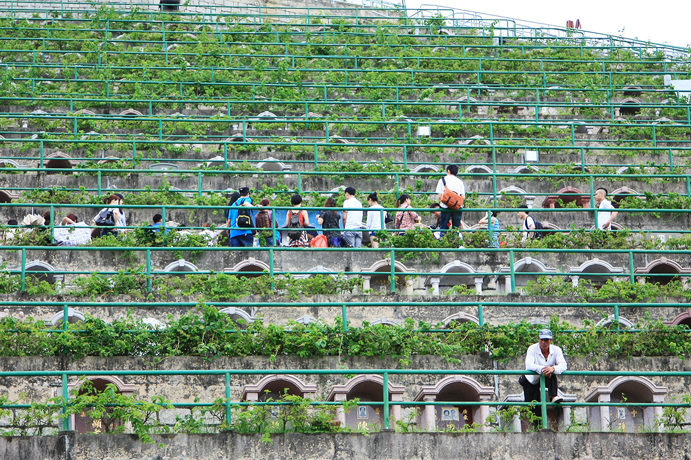
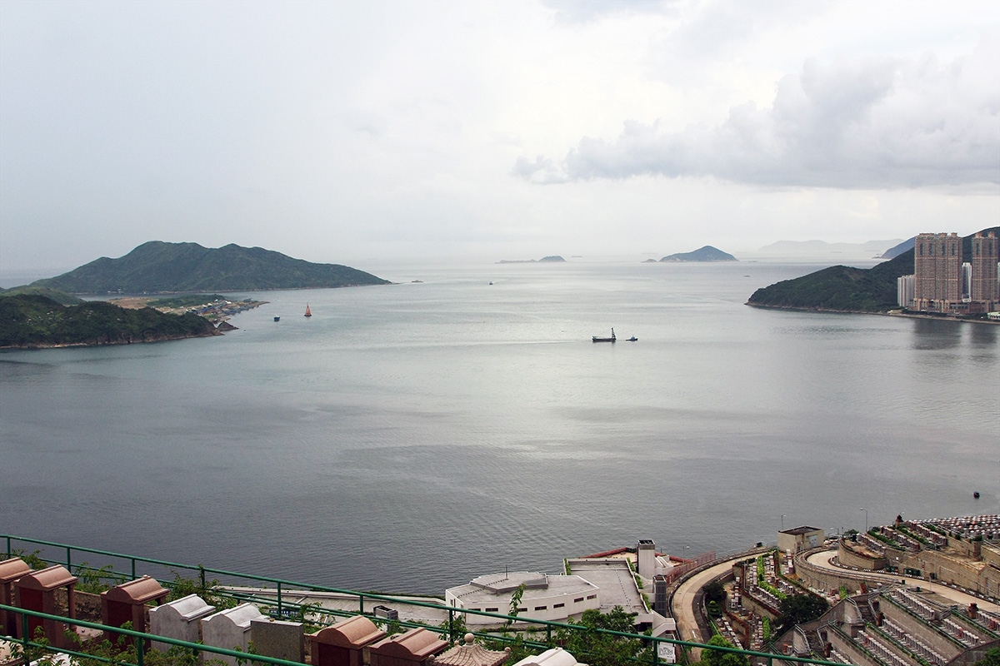

今年是黄家驹离世20年，也是Beyond成立30周年。对我们来说最实际的是：6月10号端午小长假，我们终于有机会去趟香港。然而那一天恰好是家驹生日，这种巧合让我觉得那天是必须要去家驹墓地了。毕竟这对我来说，是离开这个世界之前必须做的事之一。 墓地其实不难找，只是远了一点。我们从油塘地铁站出来，走到高超道与卫奕信径交界处，选了一个爬山的捷径上墓地。没想到久不经练的两人爬起山来很吃力，天还下起雨，山上沿路巨毒的蚊子不断地叮着我们小腿，走到半山树林中还发出不知什么生物造成的声响动静，我们只好一鼓作气爬到山顶。从树林里出来时基本雨过天晴，眼前豁然开朗，看到以下景象，至于家驹的墓地在哪？也明显得不用找了。

后来得知当天来祭奠的人还是很多，我们到达时是中午，人还算少的。有人在墓碑上放了个MP3播放器，一直在放早期的Beyond作品；墓碑底下摆满了啤酒，可乐，香烟，鲜花，卡片…等等。我们待的一个小时里，不断地有人从山路上来，几乎所有的都是来看家驹的。过了一段时间，有人弹起吉他，让大家合唱。每个素不相识的人倒也很自然地一起唱起来。旁边那位兄弟丝毫不掩盖自己走调的腔，越唱越大声。

终于看到墓碑上家驹的照片，正值青春的模样，走得早便永远年轻。墓碑前雕塑了一本书，上面写着：生命不在乎得到什么，只在乎做过什么。摇摆精神，永垂不朽。二十年过后，依然这么多人长途跋涉过来缅怀，我想他的确是做到了。

墓地靠山望海，环境很好。当我们站在那看着对面，真的感觉海阔天空，远方的景色也看得那么清晰。想起中学面对各种烦恼困境时，有他的音乐陪伴，也同样让前路明朗了些。今天我们从远方来到这，终算圆了自己二十年的心愿。
